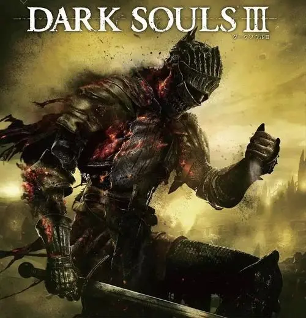

特长没有，兴趣广泛，简单介绍一下我的兴趣爱好。我喜欢玩电子游戏，听音乐等等，在这里给大家安利一下我最近在玩的游戏作品————黑暗之魂三
黑暗之魂3》是由FromSoftware公司开发的一款动作角色扮演类游戏，是《黑暗之魂》系列的游戏之一，先于2016年3月24日在日本地区全平台发行，随后于2016年4月12日在全球范围内发行。
游戏的主要舞台为洛斯里克王国。在那里，玩家肩负着阻止末世来临的使命，而末世则是由于火之纪元和那些前代黑暗印记持有者之间的冲突所引发的。为了应对这一事态，玩家需要去面对薪王——那些曾经传过火的英雄。无论结局如何，世界始终会在光与暗之间轮转。